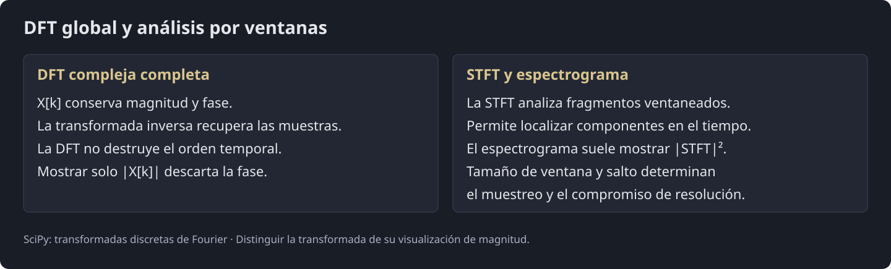
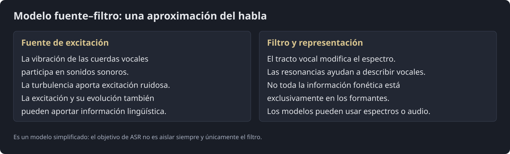
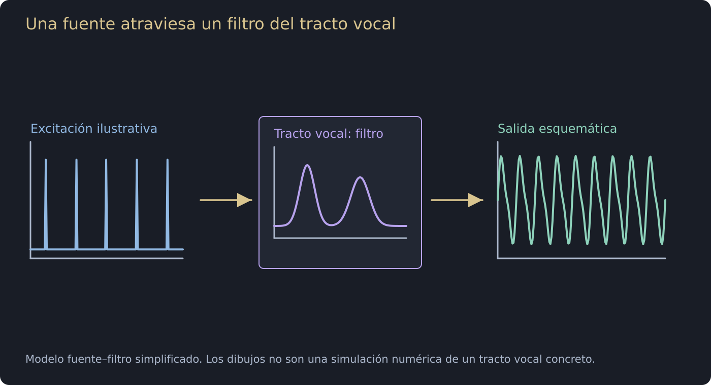
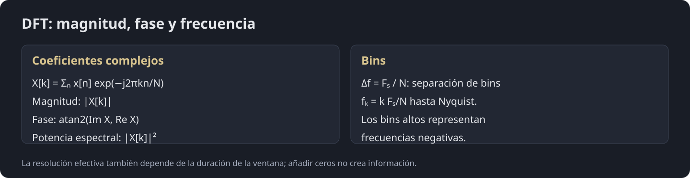
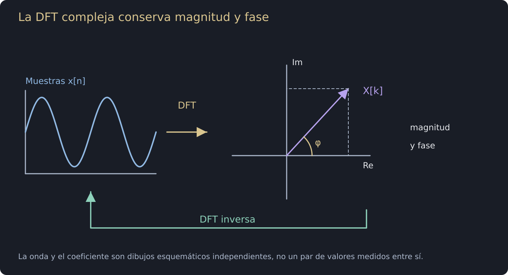
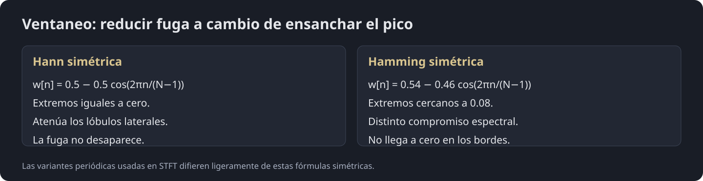
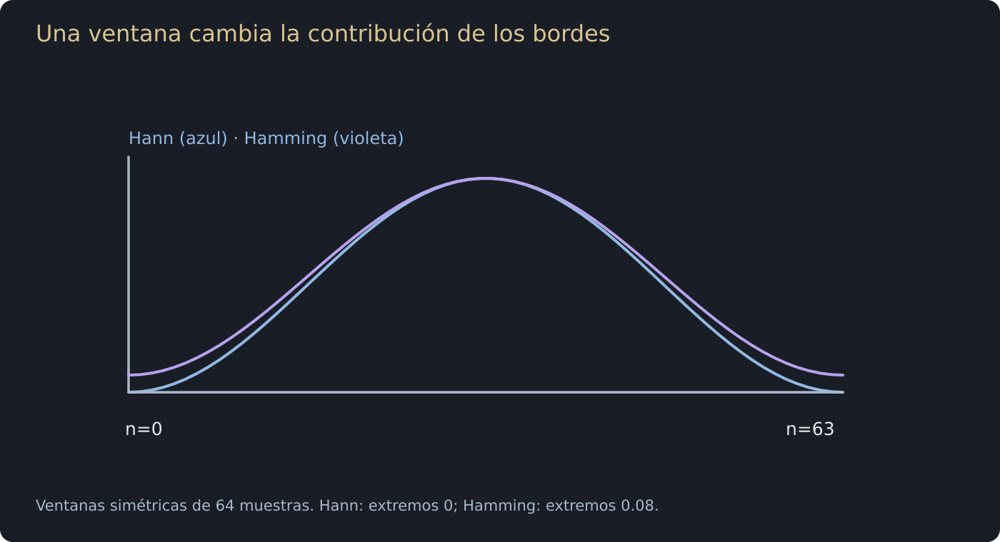
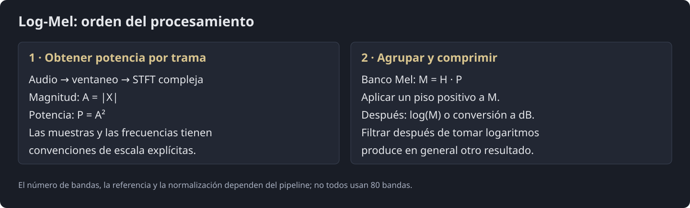
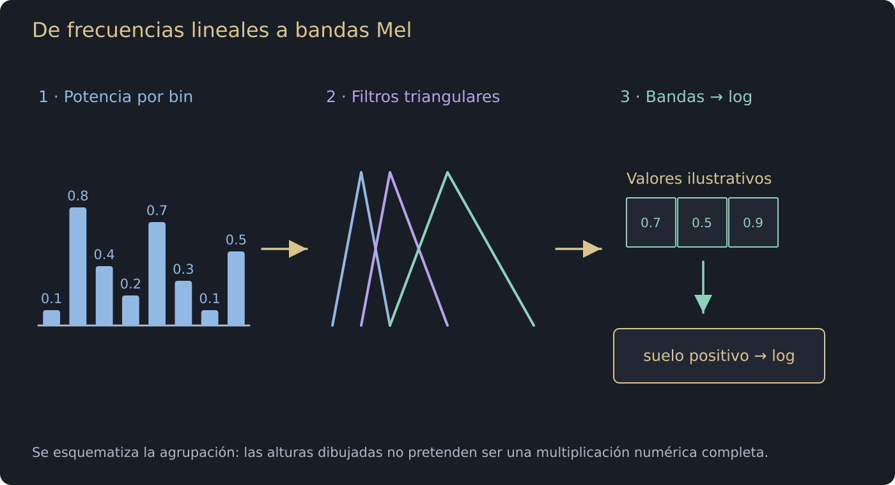

Procesamiento del Lenguaje Natural y Reconocimiento del Habla · Clase 14
14 - Introducción a ASR - Parte 1
Contenido convertido sin ejecutar Python. Se conservan las salidas guardadas; las figuras matemáticas sustituidas y los gráficos de PE están identificados en el registro de revisión.
En esta página
Bibliografía14. Fundamentos de Reconocimiento Automático del Habla (ASR) y Procesamiento de Señales de Audio14.1. Introducción y Arquitectura Sistémica del Habla14.1.1. Definición y Desafío de ASR y TTS14.2. De la Señal Continua al Dominio de la Frecuencia: Transformada de Fourier y FFT14.2.1. Formulación Matemática de la Transformada Discreta de Fourier (DFT)14.2.2. Interpretación Geométrica: Medida de Similitud (Producto Interno)14.2.3. ¿Qué significa que el resultado X [ k ] sea un Número Complejo?14.2.4. De los Bins k a las Frecuencias Reales en Hertz (Hz)14.2.5. De los Bins k a las Frecuencias Reales en Hertz (Hz)14.2.6. Conclusión para ASR y Procesamiento de Voz14.2.7. Primeras Conclusiones14. Fundamentos de Reconocimiento Automático del Habla (ASR) y Procesamiento de Señales de Audio
Esta clase introduce los principios matemáticos, físicos y computacionales que permiten transformar una señal acústica continua en representaciones discretas aptas para modelos de aprendizaje profundo en ASR (Automatic Speech Recognition) y TTS (Text-to-Speech).

14.1. Introducción y Arquitectura Sistémica del Habla
El sonido es una onda de presión mecánica continua que se propaga a través de un medio físico (como el aire) debido a las vibraciones producidas por una fuente acústica.
14.1.1. Definición y Desafío de ASR y TTS
14.1.1.1. El ciclo bidireccional texto-voz
-
ASR (Automatic Speech Recognition): Proceso computacional que traduce una señal acústica temporal continua o discreta en una secuencia ortográfica o lingüística de palabras .
-
TTS (Text-to-Speech): Proceso inverso generativo que sintetiza una forma de onda inteligible y natural a partir de una secuencia arbitraria de texto o grafemas.*
De acuerdo con Huang, Acero y Hon (2001, Cap. 1), el habla es una de las modalidades más complejas de comunicación humana debido a múltiples fuentes de variabilidad: el ruido ambiental, la distorsión del canal electroacústico (micrófono), la coarticulación fonética, las diferencias anatómicas del tracto vocal y los acentos regionales.
14.1.1.2. Formulación Probabilística Clásica (Teorema de Bayes)
En el enfoque estadístico estándar, la tarea de ASR se modela encontrando la hipótesis óptima que maximiza la probabilidad a posteriori dada la evidencia acústica :
-
Modelo Acústico : Cuantifica la probabilidad de observar las características acústicas dado que se emitió la secuencia léxica .
-
Modelo de Lenguaje : Estima la probabilidad a priori de que la secuencia de palabras sea sintáctica y semánticamente válida en el idioma.
-
Decodificador / Búsqueda: Explora el espacio de búsqueda léxico-fonético para hallar la secuencia de máxima probabilidad.
14.2. De la Señal Continua al Dominio de la Frecuencia: Transformada de Fourier y FFT

Diagrama visual · La DFT compleja conserva magnitud y fase

Cómo leer esta imagen
-
La izquierda muestra una señal discreta sintética. La DFT completa la expresa mediante coeficientes complejos; la flecha del plano separa parte real e imaginaria.
-
La longitud de un coeficiente es su magnitud y su ángulo es su fase. Conservar ambas permite aplicar la transformada inversa y recuperar las muestras, salvo precisión numérica.
-
Mostrar solo magnitud es una representación derivada que descarta fase. Para localizar cambios a lo largo de una grabación se emplean ventanas y un índice temporal, como en STFT.
La forma de onda conserva la información temporal del audio. Las representaciones espectrales hacen explícitas características como resonancias y su evolución, por lo que son una elección habitual para ASR.
No es correcto declarar que procesar audio crudo sea intrínsecamente ineficiente o inviable: modelos como wav2vec 2.0 aprenden representaciones a partir de la forma de onda. Además de los formantes, la excitación, las transiciones y la prosodia pueden aportar información relevante. La elección depende del modelo y de la tarea.
Referencia: Baevski et al. (2020): wav2vec 2.0

Diagrama visual · Una fuente atraviesa un filtro del tracto vocal

Cómo leer esta imagen
-
La izquierda ilustra una excitación periódica simplificada de un sonido sonoro. La voz también puede tener excitaciones ruidosas, por ejemplo turbulencia.
-
El filtro representa la respuesta del tracto vocal: refuerza o atenúa regiones del espectro. La salida conserva una organización temporal y espectral influida por ambos componentes.
-
Es un modelo simplificado del habla, no una separación exacta en cualquier grabación. La información lingüística no reside exclusivamente en el filtro, y ASR no exige siempre aislarlo.
14.2.1. Formulación Matemática de la Transformada Discreta de Fourier (DFT)
Cuando grabamos un audio, obtenemos una señal en el dominio del tiempo discreto, denotada comúnmente como (donde representa el índice de cada muestra tomada a una frecuencia de muestreo ).
-
La limitación del dominio temporal: La señal temporal nos dice cuánta presión o amplitud hay en cada instante, pero oculta qué notas, formantes vocálicos o frecuencias componen dicho sonido.
-
La solución de la DFT: La Transformada de Fourier Discreta (DFT) toma esas muestras temporales y las proyecta en el dominio de la frecuencia discreta, descomponiendo la señal en una combinación lineal de ondas sinusoidales elementales.
Diagrama visual · La DFT compleja conserva magnitud y fase
Cómo leer esta imagen
-
La izquierda muestra una señal discreta sintética. La DFT completa la expresa mediante coeficientes complejos; la flecha del plano separa parte real e imaginaria.
-
La longitud de un coeficiente es su magnitud y su ángulo es su fase. Conservar ambas permite aplicar la transformada inversa y recuperar las muestras, salvo precisión numérica.
-
Mostrar solo magnitud es una representación derivada que descarta fase. Para localizar cambios a lo largo de una grabación se emplean ventanas y un índice temporal, como en STFT.
La Transformada Discreta de Fourier (DFT) convierte una secuencia finita de muestras discretas del tiempo en una secuencia de números complejos que representan la amplitud y fase de las distintas componentes de frecuencia armónica:<>

Diagrama visual · La DFT compleja conserva magnitud y fase

Cómo leer esta imagen
-
La izquierda muestra una señal discreta sintética. La DFT completa la expresa mediante coeficientes complejos; la flecha del plano separa parte real e imaginaria.
-
La longitud de un coeficiente es su magnitud y su ángulo es su fase. Conservar ambas permite aplicar la transformada inversa y recuperar las muestras, salvo precisión numérica.
-
Mostrar solo magnitud es una representación derivada que descarta fase. Para localizar cambios a lo largo de una grabación se emplean ventanas y un índice temporal, como en STFT.
Para entender a fondo la ecuación de la DFT, analicemos el rol de cada variable:
-
(Tamaño de la ventana o bloque): Es el número total de muestras que estamos analizando simultáneamente.
-
(Índice temporal): La coordenada de cada muestra en el tiempo ().
-
(Índice o "bin" frecuencial): Representa la frecuencia de análisis (). Cada valor de evalúa la presencia de una frecuencia que completa exactamente ciclos a lo largo de las muestras.
-
: El valor de la muestra de audio en el tiempo .
-
: El resultado espectral para la frecuencia , que es un número complejo.
Diagrama visual · La DFT compleja conserva magnitud y fase
Cómo leer esta imagen
-
La izquierda muestra una señal discreta sintética. La DFT completa la expresa mediante coeficientes complejos; la flecha del plano separa parte real e imaginaria.
-
La longitud de un coeficiente es su magnitud y su ángulo es su fase. Conservar ambas permite aplicar la transformada inversa y recuperar las muestras, salvo precisión numérica.
-
Mostrar solo magnitud es una representación derivada que descarta fase. Para localizar cambios a lo largo de una grabación se emplean ventanas y un índice temporal, como en STFT.
Ejemplo de Extracción de Características Básicas - PyTorch
Código Python · celda 28
import torch
import torchaudio
import torchaudio.functional as F
import torchaudio.transforms as T
from torchaudio.utils import _download_asset
import numpy as np
import IPython.display as ipd
Código Python · celda 29
# 1. Descarga del archivo de audio real desde el repositorio público de TorchAudio
speech_path = _download_asset("tutorial-assets/Lab41-SRI-VOiCES-src-sp0307-ch127535-sg0042.wav")
# 2. Lectura y verificación tensorial
waveform, sample_rate = torchaudio.load(speech_path)
# Si el audio contiene más de un canal, seleccionamos el primer canal mono
if waveform.shape[0] > 1:
waveform = waveform[0:1, :]
# Recortamos a los primeros 1.8 segundos para optimizar la animación interactiva
duracion_analisis = 1.8
num_samples = int(duracion_analisis * sample_rate)
waveform_segment = waveform[:, :num_samples]
print(f"Dataset de origen: VOiCES (Licencia CC BY 4.0)")
print(f"Frecuencia (Fs): {sample_rate} Hz")
print(f"Dimensiones Tensor: {tuple(waveform_segment.shape)} [Canales, Muestras]")
print(f"Duración analizada: {waveform_segment.shape[1] / sample_rate:.2f} s")
print(num_samples)
# Reproducción en celda
ipd.display(ipd.Audio(waveform_segment.squeeze().numpy(), rate=sample_rate))
Dataset de origen: VOiCES (Licencia CC BY 4.0) Frecuencia (Fs): 16000 Hz Dimensiones Tensor: (1, 28800) [Canales, Muestras] Duración analizada: 1.80 s 28800
Código Python · celda 30
# ==============================================================================
# CELDA 2 (CORREGIDA): Filtro de Pre-énfasis y particionado en bloques
# ==============================================================================
# 1. Filtro FIR de pre-énfasis (mantenemos las 2 dimensiones [1, muestras])
preemph_coeff = 0.97
audio_preemph_2d = F.preemphasis(waveform_segment, coeff=preemph_coeff)
# Parámetros estándar en reconocimiento acústico del habla (ASR)
win_ms = 25.0 # Ventana de 25 ms (período cuasiestacionario de las cuerdas vocales)
hop_ms = 10.0 # Salto de 10 ms (solapamiento del 60% entre ventanas adyacentes)
n_fft = 512 # Bins para el algoritmo de Cooley-Tukey FFT
win_length = int(win_ms * sample_rate / 1000) # 400 muestras a 16 kHz
hop_length = int(hop_ms * sample_rate / 1000) # 160 muestras a 16 kHz
# Función de ventana Hamming generada como tensor
hamming_win = torch.hamming_window(win_length)
# 2. Padding reflectante aplicado sobre el tensor 2D y reducción posterior a 1D
audio_pad_2d = torch.nn.functional.pad(
audio_preemph_2d,
(win_length // 2, win_length // 2),
mode='reflect'
)
audio_pad = audio_pad_2d.squeeze(0)
audio_preemph = audio_preemph_2d.squeeze(0)
# Cálculo de marcos temporales
num_frames = (len(audio_pad) - win_length) // hop_length
freq_bins = n_fft // 2 + 1
freqs_hz = np.linspace(0, sample_rate / 2, freq_bins)
times_sec = np.arange(num_frames) * (hop_length / sample_rate)
print(f"Ventana de análisis: {win_length} muestras ({win_ms} ms)")
print(f"Paso de avance (hop): {hop_length} muestras ({hop_ms} ms)")
print(f"Total de marcos: {num_frames} cuadros calculados")
print(f"Resolución bin (Δf): {sample_rate / n_fft:.2f} Hz por canal")
print(f"Forma audio_pad: {tuple(audio_pad.shape)} (listo para la Celda 3)")
Ventana de análisis: 400 muestras (25.0 ms) Paso de avance (hop): 160 muestras (10.0 ms) Total de marcos: 180 cuadros calculados Resolución bin (Δf): 31.25 Hz por canal Forma audio_pad: (29200,) (listo para la Celda 3)
14.2.2. Interpretación Geométrica: Medida de Similitud (Producto Interno)
La transformada de Fourier es, en esencia, una medida de similitud o correlación entre la señal de audio y exponenciales complejas de frecuencia variable.
Aplicando la fórmula de Euler (), expandimos la ecuación:
Diagrama visual · La DFT compleja conserva magnitud y fase
Cómo leer esta imagen
-
La izquierda muestra una señal discreta sintética. La DFT completa la expresa mediante coeficientes complejos; la flecha del plano separa parte real e imaginaria.
-
La longitud de un coeficiente es su magnitud y su ángulo es su fase. Conservar ambas permite aplicar la transformada inversa y recuperar las muestras, salvo precisión numérica.
-
Mostrar solo magnitud es una representación derivada que descarta fase. Para localizar cambios a lo largo de una grabación se emplean ventanas y un índice temporal, como en STFT.
La DFT calcula productos con exponenciales complejas de frecuencias de análisis. La ortogonalidad de esa base permite obtener sus coeficientes.
Una sinusoide exactamente alineada con un bin puede concentrar su contribución en los bins correspondientes. Si no coincide con la rejilla o se usa una ventana finita, puede distribuir energía entre bins: es fuga espectral. Un coeficiente no mide exclusivamente una sinusoide física aislada del resto.
Referencia: SciPy: FFT
14.2.3. ¿Qué significa que el resultado sea un Número Complejo?
Cada coeficiente complejo se describe mediante magnitud y fase (la fase no está definida cuando la magnitud es cero). La magnitud no es directamente energía: se utiliza , con los factores de normalización pertinentes, para describir energía o potencia espectral.
Muchos pipelines de ASR usan magnitud o potencia y descartan la fase explícita. Otros modelos parten del audio crudo. Para reconstruir exactamente las muestras con la DFT inversa hace falta el espectro complejo completo o su representación equivalente.
Referencia: SciPy: FFT
14.2.4. De los Bins a las Frecuencias Reales en Hertz (Hz)
Para una frecuencia de muestreo y una DFT de longitud , la separación entre bins es:
No debe confundirse esa separación con la resolución efectiva para separar dos tonos cercanos: también depende de la duración y de la ventana. Añadir ceros aumenta el número de bins e interpola la rejilla, pero no crea nueva información de la señal.
Referencia: SciPy: FFT
Diagrama visual · La DFT compleja conserva magnitud y fase
Cómo leer esta imagen
-
La izquierda muestra una señal discreta sintética. La DFT completa la expresa mediante coeficientes complejos; la flecha del plano separa parte real e imaginaria.
-
La longitud de un coeficiente es su magnitud y su ángulo es su fase. Conservar ambas permite aplicar la transformada inversa y recuperar las muestras, salvo precisión numérica.
-
Mostrar solo magnitud es una representación derivada que descarta fase. Para localizar cambios a lo largo de una grabación se emplean ventanas y un índice temporal, como en STFT.
Para una señal real, la DFT verifica simetría conjugada:
Por eso rfft devuelve coeficientes no redundantes. El bin 0 es DC. Si es par, el bin corresponde exactamente a (Nyquist); con impar no hay un bin exactamente en Nyquist. Los coeficientes complejos incluyen tanto magnitud como fase.
Referencia: SciPy: FFT
14.2.5. De los Bins a las Frecuencias Reales en Hertz (Hz)
Matemáticamente, la DFT no ve a como un fragmento aislado de duración finita, sino como un único ciclo de una señal que se repite periódicamente en el tiempo desde hasta .

Diagrama visual · Una ventana cambia la contribución de los bordes

Cómo leer esta imagen
-
Las curvas son ventanas simétricas de 64 muestras. La Hann llega a cero en ambos extremos; la Hamming termina en 0.08.
-
Cada curva multiplica la señal muestra a muestra antes de la DFT. Reducir las discontinuidades del recorte cambia el compromiso entre lóbulo principal y lóbulos laterales.
-
No desaparece toda fuga espectral. Las versiones periódicas para análisis por frames usan otra convención en el denominador; este dibujo corresponde a las fórmulas simétricas de la ficha.
-
Si el final de la ventana no coincide con el inicio , la repetición periódica introduce un salto abrupto o discontinuidad artificial en los extremos del bloque.
-
Este salto abrupto genera armónicos de alta frecuencia espurios que "ensucian" el espectro, fenómeno conocido como fuga espectral (spectral leakage)**.
-
Solución en ASR: Por esta razón exacta, antes de aplicar la DFT o FFT, multiplicamos el bloque de audio por una función de ventana suave (como Hamming o Hanning), que atenúa los extremos y reduce lóbulos laterales; Hann llega a cero en su versión simétrica, mientras Hamming conserva un pedestal cercano a 0.08. El ventaneo reduce la fuga, no la elimina.
Diagrama visual · Una ventana cambia la contribución de los bordes
Cómo leer esta imagen
-
Las curvas son ventanas simétricas de 64 muestras. La Hann llega a cero en ambos extremos; la Hamming termina en 0.08.
-
Cada curva multiplica la señal muestra a muestra antes de la DFT. Reducir las discontinuidades del recorte cambia el compromiso entre lóbulo principal y lóbulos laterales.
-
No desaparece toda fuga espectral. Las versiones periódicas para análisis por frames usan otra convención en el denominador; este dibujo corresponde a las fórmulas simétricas de la ficha.
14.2.6. Conclusión para ASR y Procesamiento de Voz
Muchos sistemas dividen el audio en ventanas de decenas de milisegundos, con solapamiento. La longitud y el salto son parámetros del frontend; no todos los sistemas ASR usan la misma ventana ni todos requieren un espectrograma explícito.
Referencia: SciPy · ShortTimeFFT
Diagrama visual · La DFT compleja conserva magnitud y fase
Cómo leer esta imagen
-
La izquierda muestra una señal discreta sintética. La DFT completa la expresa mediante coeficientes complejos; la flecha del plano separa parte real e imaginaria.
-
La longitud de un coeficiente es su magnitud y su ángulo es su fase. Conservar ambas permite aplicar la transformada inversa y recuperar las muestras, salvo precisión numérica.
-
Mostrar solo magnitud es una representación derivada que descarta fase. Para localizar cambios a lo largo de una grabación se emplean ventanas y un índice temporal, como en STFT.
La STFT devuelve coeficientes complejos por tiempo y frecuencia. Su magnitud y su potencia son representaciones derivadas; un espectrograma de potencia usa el módulo al cuadrado. Algunos modelos trabajan con características espectrales y otros aprenden representaciones desde la onda.
Referencia: SciPy · ShortTimeFFT
Diagrama visual · La DFT compleja conserva magnitud y fase
Cómo leer esta imagen
-
La izquierda muestra una señal discreta sintética. La DFT completa la expresa mediante coeficientes complejos; la flecha del plano separa parte real e imaginaria.
-
La longitud de un coeficiente es su magnitud y su ángulo es su fase. Conservar ambas permite aplicar la transformada inversa y recuperar las muestras, salvo precisión numérica.
-
Mostrar solo magnitud es una representación derivada que descarta fase. Para localizar cambios a lo largo de una grabación se emplean ventanas y un índice temporal, como en STFT.
14.2.7. Primeras Conclusiones

Diagrama visual · De frecuencias lineales a bandas Mel

Cómo leer esta imagen
-
Las barras de la izquierda representan potencia por bin de frecuencia. En el centro, cada filtro triangular pondera varios bins; se suman sus contribuciones para formar una banda.
-
La separación de filtros aumenta en Hz a frecuencias altas. La cantidad de bandas y su normalización dependen de la configuración; el dibujo muestra solo unas pocas para que se vea el mecanismo.
-
Para obtener log-Mel se aplica un suelo positivo y después el logaritmo a las potencias de banda. Filtrar después de tomar logaritmos da, en general, otro resultado. La escala Mel es una aproximación perceptiva, no una réplica exacta del oído.